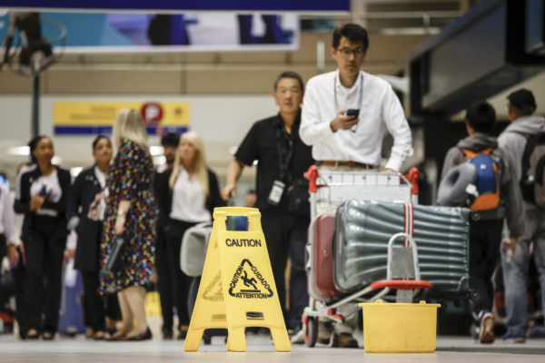

2024年8月5日，加拿大亚伯塔省卡尔加里遭遇冰雹和强降雨，导致卡尔加里国际机场漏雨，当天晚些时候，该机场部分国内航站楼关闭。8月6日，旅客们在机场小心翼翼地绕过接漏雨的水桶。（Jeff McIntosh/加通社） 【2024年08月07日讯】（记者李平多伦多报导）周一（8月5日）晚，大冰雹和暴雨袭击卡尔加里，对房屋、汽车和卡尔加里国际机场造成了大面积损坏。当晚8时左右，加拿大环境与气候变化部（ECCC）发布严重雷暴冰雹天气警告。随后，暴风雨席卷卡尔加里，城北降冰雹，对机场造成破坏，迫使部分登机口旅客撤离。
机场当天宣布国内航站楼因冰雹和强降雨造成损坏而关闭。机场发帖透露，已经开始清理积水和评估损失但部分国内航站楼继续关闭，直至另行通知，乘客应向航空公司查询航班进展情况。
冰雹袭击下，市内部分主要道路部分路段积水，影响道路行车，一些司机只能在立交桥下暂避。网民上传的社交媒体视频显示，凉亭被毁、车窗被砸碎、房屋墙板受损。
环境部周二（8月6日）早上发布的天气摘要显示，亚省女王镇冰雹个头最大，大小有棒球那么大。国家气象局表示，亚省蒂利（Tilley）风最大，风速高达每小时100公里。
责任编辑：文芳